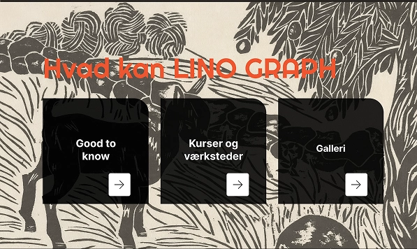
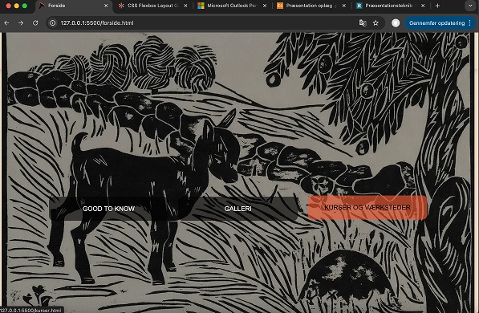

Om tema 3
I tema 3 blev jeg introduceret til UX og UI altså user experience og user interface. UX er bruger oplevelsen, altså hvordan brugeren nemmest og logisk kan finde rundt på sitet, altså oplevelses struktur og funktionalitet. UI er brugergrænsefladen, altså hvordan det visuelle udtryk er og hvor nemt det er for brugeren at se konsistensen, samt læsbarhed, ikoner, layout og animationer. Denne viden skulle bruges til at lave vores eget side med selvvalgt tema.